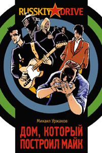

Михаил Уржаков • Дом, который построил Майк • russkiy drive • 09.09.2005

Если и существует феномен интересного чтения, то роман М.Уржакова тому пример. И уже тем, как лихо закручена одна линия леди Диана Спенсер (той самой), чего стоит. И географической безграничностью повествования: от злачных мест загнивших от пресыщения европейских столиц до расцветающей под живительными лучами учения чухче Северной Кореи. Да-да, Ким Ир Сен тоже один из персонажей. Как, впрочем, и Слава Бутусов с Умкой (Умецким), Шевчуком из “ДДТ” и др., вплоть до размякшего под кумаром дальневосточной конопли реального (раз из жизни) и символического (раз из совкового прошлого) старшины внутренних войск Урумбека Маменгалиева.
Михаил Уржаков, он же Майкл Стенли Гейтс, уже широко известен нашему читателю по многочисленным рассказам, повестям, а также сценариям к фильмам “Люди”, “Зеленое небо – 2”, и “Водоканал-3”. Закончил в 1990 г. Свердловский архитектурный институт, но работать по профессии не стал. В 1992 году вступил на зыбкую тропу журналистики.